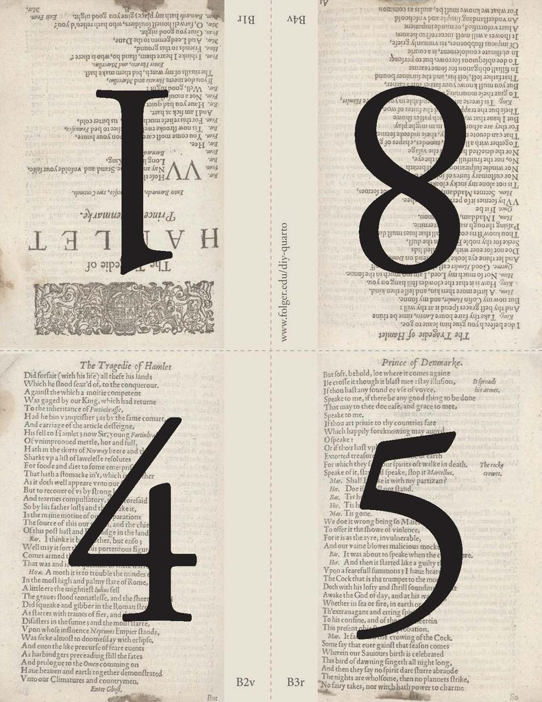
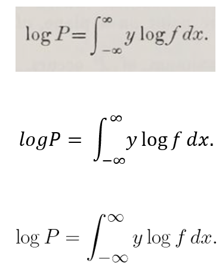

install.packages("devtools")
library(devtools)
install_version("knitr", version = "1.42", repos = "http://cran.us.r-project.org")Módulo 6: Introducción a Quarto
Generalidades
Introducción
Introducción
R tiene la capacidad de crear reportes en distintos formatos.
Esta funcionalidad en el pasado se daba gracias al paquete
rmarkdown(creado por los mismos desarrolladores de RStudio), que es una adaptación del lenguaje Markdown. Sin embargo,rmarkdownposee ciertas desventajas:Es exclusivo de lenguaje R
Necesita de otros paquetes para crear distintos tipos de documentos (
blogdownpara sitios web,bookdownpara libros orevealjspara crear presentaciones).El hacer uso de extensiones es complejo.
En 2022, el grupo de desarrolladores de RStudio (Posit), lanzó Quarto como la siguiente generación de
rmarkdown. Entre sus ventajas cuenta:Es multi-lenguaje. Al momento tiene compatibilidad con Python, Julia, Observable y por supuesto R.
Opciones de renderizado centralizadas (no se requiere ya de distintos paquetes para crear sitios web, libros o presentaciones).
Las extensiones son fácilmente instaladas (ejemplo: puntero láser en presentaciones).
¿Qué es Quarto?
Quarto es un sistema de publicación científica de licencia abierta construído en Pandoc
Fue nombrado de esta manera por la intención de sus creadores de darle un nombre representativo: Quarto es el formato de un panfleto o libro producido de hojas impresas que contienen 8 páginas de texto (4 páginas por carilla). Se cree que el primer libro europeo impreso fue un Quarto llamado el Sibyllenbuch, atribuido a Johannes Gutenberg entre 1452 y 1453.
. . .

¿Qué es Quarto?
Con Quarto podemos producir documentos en varios formatos, pero debemos tener en cuenta algunos pre-requisitos:
html (no necesita pre-requerisitos)
pdf (necesita \(\LaTeX\))
Word (necesita Microsoft Office o LibreOffice)
Power Point (necesita Microsoft Office o LibreOffice)
Shiny apps (necesita el paquete
shinyde R)
Otra funcionalidad interesante de Quarto (y
rmarkdowntambién), es el poder renderizar ecuaciones:- Cuando creamos documentos con fórmulas matemáticas, Quarto usa un módulo llamado “Latexmk” que las renderiza de manera similar como lo haría \(\LaTeX\).
¿Qué es \(\LaTeX\)?
\(\TeX\) es un sistema de edición de fórmulas creado por el matemático Donald Knuth en 1978.
Posteriormente en 1984, el matemático Leslie Lamport creó \(\LaTeX\), que es un software de edición que se basa en \(\TeX\).
Tanto \(\TeX\) como \(\LaTeX\), nacieron de la necesidad de contar con un editor de texto capaz de renderizar ecuaciones matemáticas.
Bastante popular en ingenierías, física y matemáticas.
Independientemente de que creemos documentos en Word o pdf con fórmulas, estas necesitan estar en lenguaje \(\TeX\) para su renderización.
Si creamos documentos en pdf, es indispensable instalar alguna versión de \(\LaTeX\), como ya veremos en breve.

Básicos de Quarto
Instalación de Quarto
Ingresa al siguiente sitio y descarga Quarto acorde a tu Sistema Operativo.
Sigue las intrucciones sin cambiar los defaults e instala Quarto.
Para el correcto funcionamiento de Quarto, es necesario que cuentes con el paquete
knitr.En el caso de usar visualizaciones basadas en
plotly(heatmaplypor ejemplo), es necesario instalar una versión anterior deknitr. A la fecha de crear estas diapositivas, 05.04.2024, la última versión disponible deknitrproduce errores al intentar renderizar documentos que contengan objetos creados conplotlyo sus dependencias.Para instalar una versión anterior (de cualquier paquete), podemos usar la ayuda del paquete
devtools, de la siguiente manera:
. . .
Instalación de \(\LaTeX\)
Existen varias opciones para contar con \(\LaTeX\) (MiKTeX, TeX Live por ejemplo). Sin embargo, los autores de Quarto recomiendan usar TinyTeX.
Para instalar TinyTex, lo más simple es hacerlo mediante el terminal de R:
. . .
quarto install tinytex. . .

Preparando nuestro ambiente de trabajo
Vamos a “File” (Archivo, dependiendo de si instalaste R con GUI y mensajes traducidos).
Escogemos la opción “New Project…” (Proyecto Nuevo…)
Preparando nuestro ambiente de trabajo

Vamos a “File” (Archivo, dependiendo de si instalaste R con GUI y mensajes traducidos).
Escogemos la opción “New Project…” (Proyecto Nuevo…).
RStudio nos dará a escoger entre distintos tipos de proyectos, escogeremos “Quarto Project” (Proyecto de Quarto).
Preparando nuestro ambiente de trabajo
Vamos a “File” (Archivo, dependiendo de si instalaste R con GUI y mensajes traducidos).
Escogemos la opción “New Project…” (Proyecto Nuevo…).
RStudio nos dará a escoger entre distintos tipos de proyectos, escogeremos “Quarto Project” (Proyecto de Quarto).
Luego, escogeremos de entre tres opciones la llamada “New Directory” (Nuevo Directorio).
Preparando nuestro ambiente de trabajo
Vamos a “File” (Archivo, dependiendo de si instalaste R con GUI y mensajes traducidos).
Escogemos la opción “New Project…” (Proyecto Nuevo…).
RStudio nos dará a escoger entre distintos tipos de proyectos, escogeremos “Quarto Project” (Proyecto de Quarto).
Luego, escogeremos de entre tres opciones la llamada “New Directory” (Nuevo Directorio).
En esta ventana, RStudio nos preguntará el nombre del nuevo directorio que queremos crear para nuestro proyecto y la ubicación del mismo. Dejamos los otros campos tal cual están en el visor. Damos entonces el click en “Create Project” (Crear Proyecto).
Preparando nuestro ambiente de trabajo
Una vez que hallamos seguido los pasos, RStudio habrá creado un script de template además de otros archivos dentro del directorio de trabajo que hayamos especificado.
¿Todo funciona bien?
En este punto, comprobaremos si todos los pasos que hemos seguido en la instalación fueron correctos.
Basta con presionar el botón “Render” en nuestro script. Esta acción le ordena a RStudio a renderizar el template que obtuvimos después de la creación del proyecto.
Como resultado, RStudio abrirá una ventana del navegador de internet predeterminado de tu ordenador para mostrar el documento renderizado (por default, Quarto genera documentos de extensión html).
. . .

Partes básicas de un documento de Quarto
Nota que la extensión del documento de Quarto es “qmd”.
En el código básico generamos al crear el proyecto, podemos reconocer fácilmente tres secciones de código:
Encabezado: delimitado por
---, contiene instrucciones en formato YAMLFragmentos (chunks) de código R: delimitados con
```Texto llano precedido por un encabezado delimitado por
##
Esta es la estructura básica de un código fuente en un documento de Quarto.
Tenemos entonces, dos opciones para trabajar en Quarto:
Trabajar directamente en el código fuente.
Trabajar con el editor Visual de RStudio sobre documentos de Quarto.
Esta última opción es la recomendada para principiantes ya que es más intuitiva por su parecido con software de edición de texto (Word).
Partes básicas de un documento de Quarto
Para ello, copia el siguiente ejemplo de los “tamaños de diamante” del libro “R for Data Science” de Hadley Wickham y cópialo sobre el archivo que generamos:
---
title: "Diamond sizes"
date: 2022-09-12
format:
html:
theme: cosmo
pdf:
documentclass: report
docx: default
---
```{r}
#| label: setup
#| include: false
library(tidyverse)
smaller <- diamonds |>
filter(carat <= 2.5)
```
We have data about `r nrow(diamonds)` diamonds.
Only `r nrow(diamonds) - nrow(smaller)` are larger than 2.5 carats.
The distribution of the remainder is shown below:
```{r}
#| label: plot-smaller-diamonds
#| echo: false
smaller |>
ggplot(aes(x = carat)) +
geom_freqpoly(binwidth = 0.01)
```
```{r}
#| echo: fenced
#| out-width: "70%"
#| fig-align: center
smaller |>
ggplot(aes(y = price, x = color)) +
geom_bar(stat = "identity")
```
```{r}
#| echo: fenced
#| tbl-cap: Una tabla con `flextable`
library(flextable)
copy_mtcars <- mtcars
copy_mtcars$brand <- row.names(mtcars)
copy_mtcars <- copy_mtcars[ , c(12,1:11)]
ft <- flextable(copy_mtcars[1:5, ])
ft <- autofit(ft)
ft
```
```{r}
#| echo: fenced
#| tbl-cap: Una tabla con `knitr`
knitr::kable(mtcars[1:5, ])
```Nombrando fragmentos de código
- Las partes de código pueden ser nombradas
. . .
```{r}
#| label: simple-addition
1 + 1
```[1] 2. . .
- Esto puede ser útil ya que nos permite navegar directamente hacia fragmentos de código específicos.
Opciones en los fragmentos de Código
El código de R que usemos para nuestros reportes tiene una variada gama de opciones, entre ellas:
eval: falsecuando no queremos que al renderizar se ejecute el código.include: falsecorre el código, pero no lo muestra en el documento.echo: falseevalua el código, y sus resultados son renderizados (ejemplo: gráficos). Pero, el código no forma parte del documento final.message: falseowarning: falseevita que mensajes o advertencias de correr el código sean parte del documento.results: hideoculta resultads;fig-show: hideoculta figuras. Estas opciones son más útiles en creación de documentos html.error: truepermite el terminar el renderizado del documento así se encuentren errores en el código. Es especialmente importante cuando comenzamos a crear el reporte ya que nos permite identificar fallas y corregirlas.
Para incluir estas opciones en nuestros fragmentos de código, podemos hacerlo usando la sintaxis
#|seguida de la opción:
. . .
```{r}
#| label: simple-multiplication
#| eval: false
2 * 2
```Opciones en las partes de Código
| Option | Run code | Show code | Output | Plots | Messages | Warnings |
|---|---|---|---|---|---|---|
eval: false |
X | X | X | X | X | |
include: false |
X | X | X | X | X | |
echo: false |
X | |||||
results: hide |
X | |||||
fig-show: hide |
X | |||||
message: false |
X | |||||
warning: false |
X |
Opciones globales
Son agregadas en el encabezado del script de Quarto (en lenguaje YAML).
Vamos a ir aprendiendo algunas de ellas conforme avancemos. Por el momento, probemos si TinyTeX funciona. Para eso, vamos a cambiar en el encabezado la línea
format: htmlporformat: pdf.De no haber tenido problemas con la instalación de TinyTex, deberás ver que en tu directorio de trabajo se ha generado un documento pdf.
. . .

Opciones para figuras
Importando figuras
Podemos importar figuras de archivos externos (.png, .jpg, .pdf, etc).
Para esto, empecemos creando una carpeta dentro de nuestro directorio de trabajo para almacenar nuestras imágenes (este paso es opcional, pero recomendado para una mejor organización de nuestros proyectos).
Hecho esto, importamos la figura de interés con la sintaxis:
{opciones}
. . .
{fig-align="center" width=15%}
. . .
- Noten como en el código arriba, el nombre de nuestra figura está antecedido por
images/.
Creando figuras en fragmentos de código
Quarto puede renderizar figuras producidas por fragmentos de código R dentro de un documento (como ya lo debiste notar al renderizar nuestro documento de ejemplo a formato pdf.
Funciona sin mayores problemas para la mayoría de plots producidos tanto por gráficos de R base,
ggplot2y otros paquetes. Aunque, con ciertas excepciones, como ya mencionamos, aquellos paquetes que dependen deplotly(que requieren una versión específica deknitr).Ahora, lo importante es saber cómo podemos determinar el tamaño de nuestras figuras. Para ello podemos hacer uso estas opciones en nuestros fragmentos de código:
fig-width: controla el ancho de la figura.fig-height: controla el alto de la figura.fig-asp: controla la relación de aspecto (relación ancho por alto).out-widthyout-height: controlan el ancho y largo de la figura (en porcentaje con respecto al ancho y alto de la página del documento).
Controlando el tamaño de una figura
- El libro “R for Data Science”, nos da las siguientes recomendaciones:
- Fijar
fig-width: 6(6 pulgadas) yfig-asp: 0.618(la proporción áurea) para todas las figuras (en el encabezado). Luego, si deseáramos cambiar una figura individual, lo hacemos ajustandofig-asppor fragmentos individuales.
. . .
---
title: "Diamond sizes"
date: 2022-09-12
format:
pdf:
fig-width: 6
fig-asp: 0.618
---```{r}
#| fig-asp: 0.3
smaller |>
ggplot(aes(y = price, x = color)) +
geom_bar(stat = "identity")
```
Controlando el tamaño de una figura
- Controlar el tamaño con
out-widthy definirlo a un porcentaje del ancho de la hoja del documento. Sugiereout-width: "70%"yfig-align: center. Esto de manera individual por cada figura.
. . .
```{r}
#| out-width: "70%"
#| fig-align: center
smaller |>
ggplot(aes(y = price, x = color)) +
geom_bar(stat = "identity")
```
Otras opciones de figuras importantes
- Podemos añadir leyendas a nuestras figuras con la opción
fig-capy su ubicación config-cap-location
. . .
```{r}
#| out-width: "30%"
#| fig-align: center
#| fig-cap: Figura de precios de diamantes de acuerdo a su color
#| fig-cap-location: bottom
smaller |>
ggplot(aes(y = price, x = color)) +
geom_bar(stat = "identity")
```
Otras opciones de figuras importantes
Cuando nos encontramos renderizando documentos de formato pdf, las figuras producidas son de alta calidad (al ser generadas como gráficos de vectores).
Sin embargo, si la figura es muy compleja (con cientos de miles de puntos en un gráfico de dispersión) esto provocará problemas:
Archivos muy pesados
Fallos de memoria, sobre todo en computadores de bajo RAM
Mayor probabilidad de que nuestros archivos pdf se corrompan con el tiempo.
Para evitar esto, podemos usar la opción
fig-format: "png". El formato de gráficos png es bastante ligero y de buena calidad.
Creando tablas en Quarto
¿Cómo creamos tablas en Quarto?
Se pueden crear manualmente en el editor Visual para documentos de Quarto de RStudio.
También a partir de fragmentos de código.
Por default, Quarto imprime tablas de datos tal cual como aparecen en la consola de R.
. . .
```{r}
mtcars[1:5, ]
``` mpg cyl disp hp drat wt qsec vs am gear carb
Mazda RX4 21.0 6 160 110 3.90 2.620 16.46 0 1 4 4
Mazda RX4 Wag 21.0 6 160 110 3.90 2.875 17.02 0 1 4 4
Datsun 710 22.8 4 108 93 3.85 2.320 18.61 1 1 4 1
Hornet 4 Drive 21.4 6 258 110 3.08 3.215 19.44 1 0 3 1
Hornet Sportabout 18.7 8 360 175 3.15 3.440 17.02 0 0 3 2Creando tablas con knitr en Quarto
- Otra opción, es la de usar
knitrpara darle formato a nuestras tablas
. . .
```{r}
#| tbl-cap: Una tabla con `knitr`
knitr::kable(mtcars[1:5, ])
```| mpg | cyl | disp | hp | drat | wt | qsec | vs | am | gear | carb | |
|---|---|---|---|---|---|---|---|---|---|---|---|
| Mazda RX4 | 21.0 | 6 | 160 | 110 | 3.90 | 2.620 | 16.46 | 0 | 1 | 4 | 4 |
| Mazda RX4 Wag | 21.0 | 6 | 160 | 110 | 3.90 | 2.875 | 17.02 | 0 | 1 | 4 | 4 |
| Datsun 710 | 22.8 | 4 | 108 | 93 | 3.85 | 2.320 | 18.61 | 1 | 1 | 4 | 1 |
| Hornet 4 Drive | 21.4 | 6 | 258 | 110 | 3.08 | 3.215 | 19.44 | 1 | 0 | 3 | 1 |
| Hornet Sportabout | 18.7 | 8 | 360 | 175 | 3.15 | 3.440 | 17.02 | 0 | 0 | 3 | 2 |
Creando tablas con flextable en Quarto
```{r}
#| tbl-cap: Una tabla con `flextable`
library(flextable)
```Warning: package 'flextable' was built under R version 4.3.3
Attaching package: 'flextable'The following object is masked from 'package:purrr':
compose```{r}
#| tbl-cap: Una tabla con `flextable`
copy_mtcars <- mtcars
copy_mtcars$brand <- row.names(mtcars)
copy_mtcars <- copy_mtcars[ , c(12,1:11)]
ft <- flextable(copy_mtcars[1:5, ])
ft <- autofit(ft)
ft
```brand | mpg | cyl | disp | hp | drat | wt | qsec | vs | am | gear | carb |
|---|---|---|---|---|---|---|---|---|---|---|---|
Mazda RX4 | 21.0 | 6 | 160 | 110 | 3.90 | 2.620 | 16.46 | 0 | 1 | 4 | 4 |
Mazda RX4 Wag | 21.0 | 6 | 160 | 110 | 3.90 | 2.875 | 17.02 | 0 | 1 | 4 | 4 |
Datsun 710 | 22.8 | 4 | 108 | 93 | 3.85 | 2.320 | 18.61 | 1 | 1 | 4 | 1 |
Hornet 4 Drive | 21.4 | 6 | 258 | 110 | 3.08 | 3.215 | 19.44 | 1 | 0 | 3 | 1 |
Hornet Sportabout | 18.7 | 8 | 360 | 175 | 3.15 | 3.440 | 17.02 | 0 | 0 | 3 | 2 |
Aprendiendo Quarto en acción
Para esta parte final de este corto módulo, vamos a ver más opciones dentro de los documentos de Quarto a través un archivo de Quarto que he creado y que está disponible aquí.